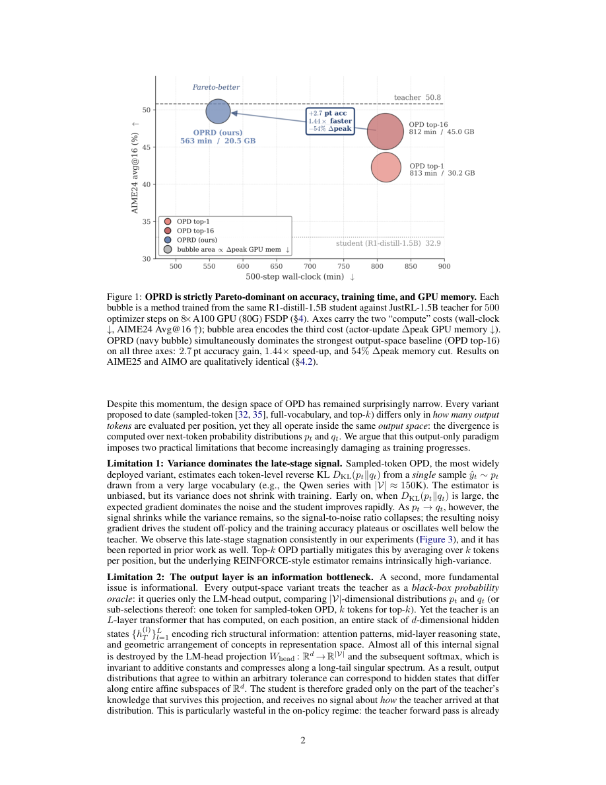

#1
★ 7/10
OPRD: On-Policy Representation Distillation
OPRD：在线策略表示蒸馏

图 Figure · Page 2 of paper
🎯 让小模型直接学习大模型的"内部思维"，而非模仿其输出
Distill smarter by teaching small models to mimic a big model's hidden thoughts, not just its word choices.
🗣️ 一句话比喻 · Plain-English Analogy就像学厨艺，普通徒弟只能尝到师傅做好的菜（模仿输出）；而OPRD让徒弟站在师傅旁边，一步步观察每个烹饪动作（对齐中间层），自然学得更快、更扎实，还省了食材！Think of it like learning to cook: most students only taste the final dish and try to copy it. OPRD is like standing next to the chef and watching every single step — how they chop, season, and stir — so you learn the real technique, not just the end result. And you waste way less ingredients doing it!
| 维度 | 中文 | English |
|---|---|---|
| ❓ 待解决 的问题 |
训练小型AI模型时，通常让它模仿大模型的"输出"——即每个词的概率分布，就像只让学生抄老师的答案，而不理解解题过程。这种方式存在两个问题：一是大词汇表（如15万词）带来的随机噪声使训练不稳定；二是大模型内部的"思考过程"完全被丢弃，白白浪费了宝贵的知识。 | When training a smaller AI model to learn from a larger one, the usual approach is to make the small model copy the big model's word probabilities — like a student who only copies answers without understanding how to solve the problem. This has two weaknesses: the huge vocabulary (150,000+ words) makes the training noisy and unstable, and all the rich "thinking steps" happening inside the big model's layers are thrown away entirely. |
| 💡 解决 的亮点 |
• 创新点1：跳过输出层，直接对齐大小模型的"中间隐藏状态"——相当于让学生学老师的解题思路，而不只是答案。 • 创新点2：从根本上消除了大词汇表带来的采样噪声，理论上更稳定。 • 创新点3：训练速度提升1.44倍，内存占用减少54%，实用性极强。 • 创新点4：在数学竞赛类推理任务上，小模型最终追上了大模型的表现，而传统方法会陷入瓶颈。 | • Novel idea: Align the student and teacher's internal hidden layers instead of just matching output word probabilities — learning the "thinking process," not just the answer. • Eliminates sampling noise from huge vocabularies at its root, making training theoretically more stable. • 1.44x faster training and 54% less memory usage compared to top-k output distillation. • The student model actually closes the gap to the teacher on hard math benchmarks, where prior methods plateau. |
| 🧪 实验 内容 |
实验在数学竞赛类推理任务上展开，使用了AIME 2024、AIME 2025和AIMO等高难度数学基准测试。基线对比方法包括标准在线策略蒸馏（OPD）及其top-k变体。评估指标为数学题解答的准确率，并同时比较训练速度和内存占用。 | Experiments focused on hard mathematical reasoning benchmarks: AIME 2024, AIME 2025, and AIMO. The baselines were standard on-policy distillation (OPD) and its top-k variant. The main metric was accuracy on competition-level math problems. Training speed (iterations per second) and GPU memory usage were also measured to evaluate practical efficiency. |
| 📊 实验 结果 |
• OPRD在AIME 2024/2025和AIMO上成功缩小了学生与教师模型之间的差距，而标准OPD基线则在低于教师模型的水平上停滞不前。 • 训练速度比top-k OPD快1.44倍。 • 内存使用比top-k OPD减少54%。 • 学生模型最终在基准测试上接近或追平教师模型的得分，是传统输出空间蒸馏无法做到的。 | • OPRD closes the student-teacher performance gap on AIME 2024, AIME 2025, and AIMO, while standard OPD baselines plateau below the teacher's scores. • Training is 1.44x faster than top-k OPD. • Memory usage is reduced by 54% compared to top-k OPD. • The student model's final benchmark scores approach or match the teacher's, a result that output-space distillation methods fail to achieve. |
| 🏁 结论 | 本文证明了将知识蒸馏从"输出层"提升到"隐藏层"不仅在理论上消除了采样噪声，在实践中也让小模型真正追上了大模型的推理性能，同时大幅提升了训练效率。 | This paper proves that distilling knowledge through a model's internal hidden layers — rather than its output probabilities — eliminates training noise, enables small models to actually match large model performance on hard reasoning tasks, and does so faster and with far less memory. |
| 🔗 论文 链接 |
arXiv: 2606.06021v1 · 📥 PDF | |
⚙️ Method · 方法详解
OPRD让小模型（学生）和大模型（老师）在同一批生成的文本（rollouts）上运行，然后直接比较它们在选定中间层的"隐藏状态向量"，用均方误差等损失函数拉近两者的差距。这完全绕过了最后的"输出词概率"这一步，因此不受词汇表大小的影响。整个对齐过程在网络的多个层同时进行，让学生能从老师的多层"思维"中学习，而非仅从最终答案中学习。
OPRD runs both the small (student) and large (teacher) models on the same generated text samples. Instead of comparing their final word-probability outputs, it compares their internal "hidden state" vectors at several chosen middle layers — think of it as comparing two students' scratch work, not just their final answers. A standard distance loss pulls the student's internal states closer to the teacher's. Because this comparison happens before the final vocabulary projection step, there's no noise from huge word lists, and the student absorbs richer, layer-by-layer structural knowledge from the teacher.
🌟 Why It Matters · 为什么重要
让小模型更高效地学习大模型的能力，意味着我们可以用更低的成本部署高性能AI，使强大的推理能力惠及更多用户和设备。这一方法对于在手机、边缘设备上运行高质量AI模型具有重要的现实意义。
Making small models truly match large ones more efficiently means powerful AI reasoning can be deployed cheaply on phones and edge devices, not just expensive servers. This could democratize access to high-quality AI reasoning for everyday applications and lower the cost of running capable AI systems at scale.